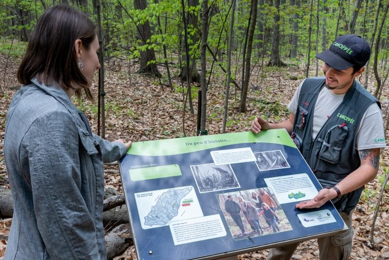
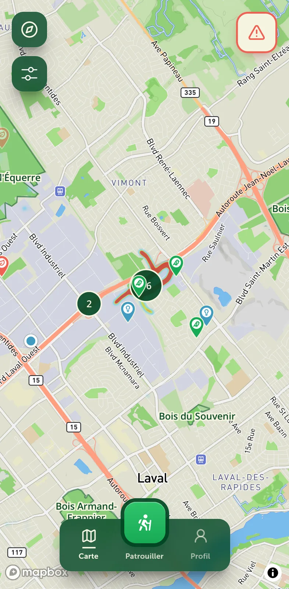
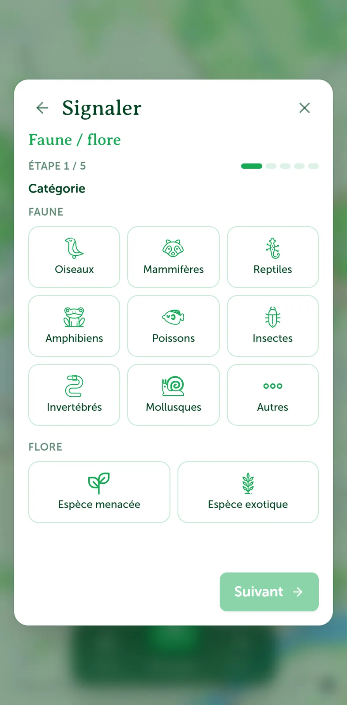
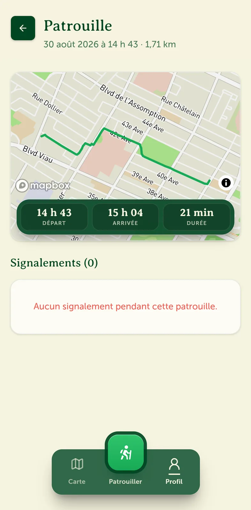
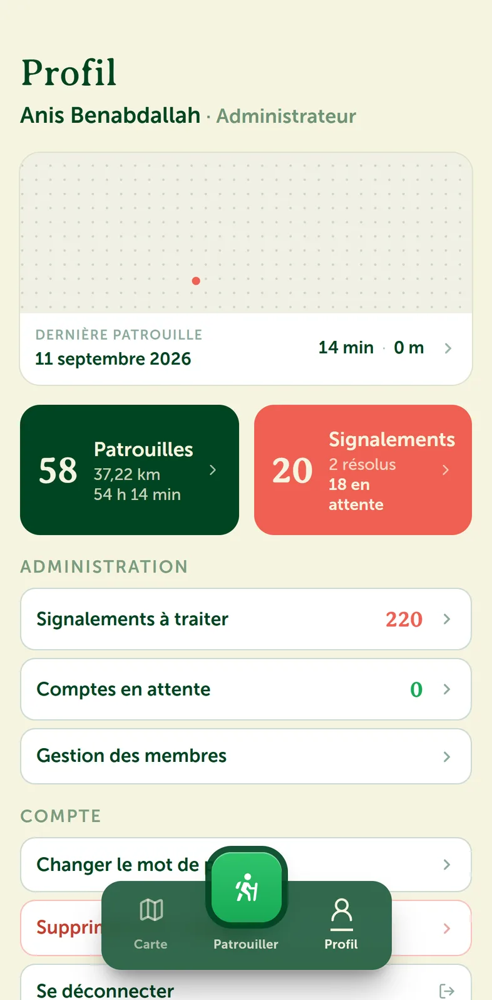

L'organisme
Le réseau Canopée est un organisme de Laval qui protège et restaure les milieux naturels. Il plante des arbres, s'occupe de projets de conservation et fait de l'éducation à l'environnement.
L'organisme compte une petite équipe d'employés et des patrouilleurs bénévoles qui surveillent environ huit secteurs boisés.

Le problème
Avant le projet, Canopée gérait ses patrouilles et ses signalements avec plusieurs outils séparés. Des fichiers Excel, un formulaire Google, les réseaux sociaux, Google Maps et les courriels.
Les parcours des patrouilles n'étaient pas enregistrés. Deux bénévoles pouvaient passer au même endroit la même journée pendant que d'autres secteurs restaient sans visite, et l'équipe n'avait aucune vue d'ensemble des zones les plus fréquentées.
Les signalements arrivaient par message ou par courriel, avec des photos mais sans format commun. Rien ne permettait de savoir si un problème avait été réglé. Les observations de faune et de flore étaient réparties dans plusieurs fichiers Excel, et les comptes des bénévoles étaient gérés à la main.
Démarche
Le projet a commencé par des rencontres avec l'équipe de Canopée pour comprendre le travail des patrouilleurs. Ces besoins ont été rassemblés dans un product requirement document (PRD), où chaque fonctionnalité avait une estimation en heures et une priorité.
Le design a suivi en trois étapes. Un moodboard a d'abord fixé la direction visuelle, à partir de l'identité de Canopée. Des maquettes basse fidélité (lo-fi) ont ensuite servi à placer les écrans et à valider les parcours avec l'organisme. Les maquettes haute fidélité (hi-fi) ont enfin précisé les couleurs, la typographie et les composants avant le développement.
Le développement s'est fait par sprints. Chaque pull request passait par une revue de code, et des tests automatisés ont été écrits avec Vitest. Le schéma de la base de données a été conçu en premier, puis la carte, les patrouilles et les signalements ont été ajoutés un à un.
Des versions iOS et Android ont ensuite été développées pour résoudre les limites de la version web, comme le suivi GPS qui s'arrête lorsque l'écran est verrouillé.
Fonctionnalités
L'application a trois grandes parties. Les patrouilles, les signalements et l'administration.

Carte
La carte affiche les secteurs boisés, les signalements ouverts et une carte de chaleur des zones où les bénévoles passent le plus souvent. Les signalements peuvent être filtrés par catégorie, et les administrateurs peuvent aussi filtrer par période.
Les observations de faune et de flore sont visibles seulement pour les employés, pour ne pas rendre public l'emplacement d'espèces menacées.

Signalements
Il y a trois types de signalements. Entretien, par exemple un arbre dangereux ou un sentier bloqué. Citoyen, par exemple un chien sans laisse ou un feu de camp. Faune et flore, pour noter une espèce observée. La position est ajoutée automatiquement et chaque signalement reçoit un numéro.
Pour la faune et la flore, la liste des espèces à statut du ministère est intégrée. Une espèce peut être cherchée par son nom commun ou son nom scientifique. Les citoyens peuvent aussi faire un signalement sans compte.

Patrouilles
Le patrouilleur appuie sur un bouton pour commencer sa patrouille. L'application enregistre sa position pendant qu'il marche. À la fin, il voit la durée, la distance et le tracé. Les patrouilles en cours des autres bénévoles sont aussi visibles sur la carte.
Sur iOS et Android, l'enregistrement continue même quand l'écran est verrouillé. S'il n'y a pas de réseau, les points sont gardés sur le téléphone et envoyés plus tard.

Administration
Quand un bénévole crée un compte, un administrateur doit l'approuver. Les employés peuvent marquer un signalement comme résolu. Il n'apparaît plus sur la carte mais il reste dans la base de données.
Tech stack
| Catégorie | Outils |
|---|---|
| Interface | Next.js, React, TypeScript, Tailwind CSS |
| Données | Supabase, PostgreSQL, Drizzle |
| Carte | Mapbox |
| Mobile | Capacitor, Swift, Java |
| Hébergement | Vercel |
| Tests | Vitest |
Défis
Réseau en forêt
Le réseau est souvent mauvais dans les boisés. Il a fallu gérer le mode hors ligne pour les patrouilles et les signalements.
Précision du GPS
Certaines positions sont décalées de plusieurs dizaines de mètres. Les points trop imprécis sont filtrés pour garder des tracés propres.
Suivi en arrière-plan
iOS et Android arrêtent souvent les applications qui tournent en arrière-plan. Du code natif en Swift et en Java a été nécessaire pour que l'enregistrement de la patrouille continue avec l'écran verrouillé.